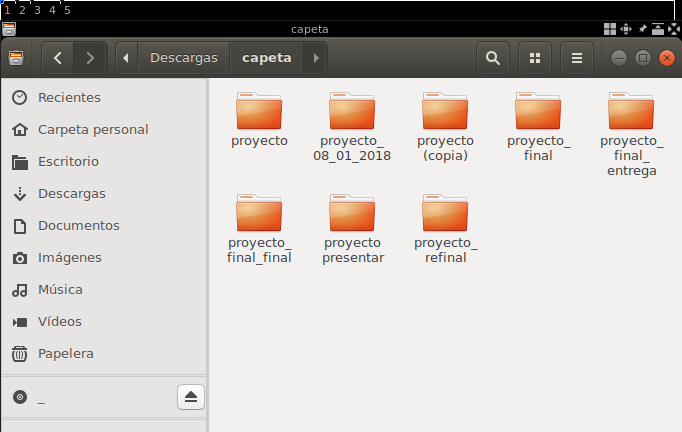
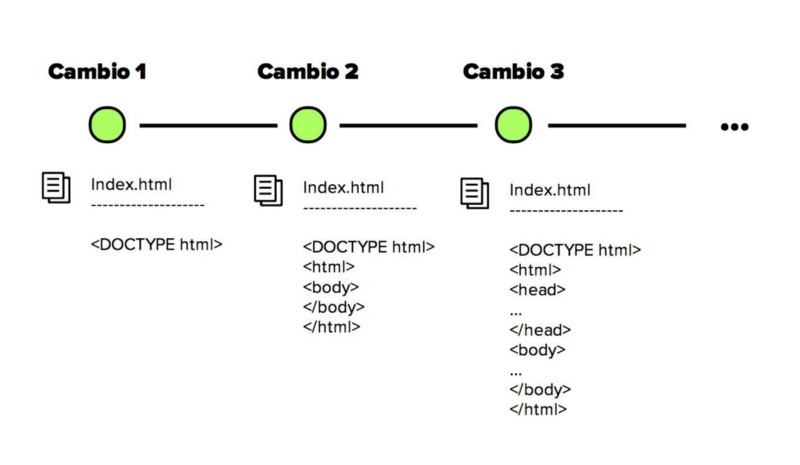

Sistemas de control de versiones
Una breve introduccion
En la actualidad, la industria del software juega un papel cada vez más importante para la economı́a global. El software ha transformado los procesos de control de la mayorı́a de los servicios de los cuales dependemos. Asi tambien cada dı́a surgen más y mejores tecnologı́as y con ellas novedosas aplicaciones, generando nuevos retos para los implicados en los procesos de software.Tambien uno de los retos a los que se enfrentan los desarrolladores de software es generar productos eficientes y de calidad sin sacrificar tiempo o costos. Este objetivo sólo se alcanza si los actores involucrados en tal proceso pueden disponer de toda la información relacionada con el proyecto
Es asi como nacen los famosos Sistemas de control de versiones (SVC), los cuales nos ayudan al proceso de desarrollo del software en forma colaborativa.
¿Que son los Sistemas de control de versiones y por que amarlos?
La vida de un desarrollador de software se encuentra dividido por un gran hecho: el antes y el después de conocer los sistemas de control de versiones.

Es muy probable que en algún momento de nuestras vidas nuestra carpeta de documentos luciera como la de la imagen y nos haya tocado recurrir a tener muchas copias de nuestros proyectos, copias que requerían de toda nuestra creatividad para nombrarlas con etiquetas super útiles para poder reconocer cuál era nuestro ansiado “proyecto final”.
Tiempo después por algún accidente del destino conocemos los sistemas de control de versiones y no podemos negarlo, nuestras vidas cambian y entramos a una era donde todo es mucho más bonito: el después.
Si, si muy bonito todo pero… ¿Qué es control de versiones?
El control de versiones es un sistema que registra los cambios realizados sobre un archivo o conjunto de archivos a lo largo del tiempo de tal manera que sea posible recuperar versiones especificas más adelante.

Los sistemas de control de versiones han ido evolucionando a lo largo del tiempo y podemos clasificarlos en tres tipos: Sistemas de Control de Versiones Locales, Centralizados y Distribuidos.
Sistemas de Control de Versiones Locales
Los sistemas de control de versiones locales en vez de mantener las versiones como archivos independientes, los almacenaban en una base de datos. Cuando era necesario revisar una versión anterior del proyecto se usaba el sistema de control de versiones en vez de acceder directamente al archivo, de esta manera en cualquier momento solo se tenia una copia del proyecto, eliminando la posibilidad de confundir o eliminar versiones.
En este punto el control de versiones se llevaba a cabo en el computador de cada uno de los desarrolladores y no existía una manera eficiente de compartir el código entre ellos.
Sistemas de Control de Versiones Centralizados
Para facilitar la colaboración de múltiples desarrolladores en un solo proyecto los sistemas de control de versiones evolucionaron: en vez de almacenar los cambios y versiones en el disco duro de los desarrolladores, estos se almacenaban en un servidor. Sin embargo, aunque el avance frente a los sistemas de control de versiones locales fue enorme, los sistemas centralizados trajeron consigo nuevos retos: ¿Cómo trabajaban múltiples usuarios en un mismo archivo al mismo tiempo?
Los sistemas de control de versiones centralizados abordaron este problema impidiendo que los usuarios invalidaran el trabajo de los demás. Si dos personas editaban el mismo archivo y se presentaba un conflicto alguien debía solucionar este problema de manera manual y el desarrollo no podía continuar hasta que todos los conflictos fueran resueltos y puestos a disposición del resto del equipo. Esta solución funcionó en proyectos que tenían relativamente pocas actualizaciones y por ende pocos conflictos pero resulto muy engorroso para proyectos con docenas de contribuyentes activos que realizaban actualizaciones a diario.
Sistemas de Control de Versiones Distribuidos
La siguiente generación de sistemas de control de versiones se alejo de la idea de un solo repositorio centralizado y optó por darle a cada desarrollador una copia local de todo el proyecto, de esta manera se construyo una red distribuida de repositorios, en la que cada desarrollador podía trabajar de manera aislada pero teniendo un mecanismo de resolución de conflictos mucho más elegante que un su versión anterior. Al no existir un repositorio central, cada desarrollador puede trabajar a su propio ritmo, almacenar los cambios a nivel local y mezclar los conflictos que se presenten solo cuando se requiera. Cómo cada usuario tiene una copia completa del proyecto el riesgo por una caída del servidor, un repositorio dañado o cualquier otro tipo de perdida de datos es mucho menor que en cualquiera de sus predecesores.